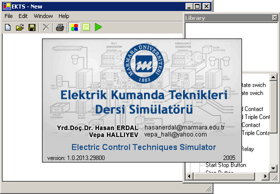

[prew] [next]
To run the program click on EKTS.exe file and it will open like shown in Figure 2. Also it is possible to open the program by using shortcut created on user desktop or programs at the start menu.

Figure 2 EKTS opening view.